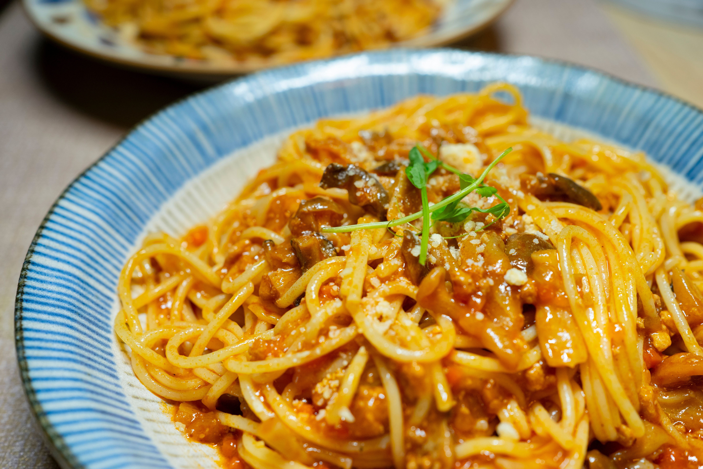

Pasta Recipe
Home

Pasta is a quick, delicious, and universally loved dish that originates from Italy.
It is made by boiling durum wheat noodles and tossing them in a flavorful sauce topped with fresh herbs.
It is the perfect meal for busy weekdays because it is both satisfying and incredibly easy to prepare.
Ingredients
- 200g spaghetti noodles
- 2 tablespoons of olive oil
- 3 cloves of minced garlic
- 1 can of crushed tomatoes
- 1/2 cup of grated parmesan cheese
- Fresh basil leaves
- Salt and red pepper flakes
Steps
- Boil water in a large pot with a pinch of salt and cook the spaghetti until it is tender.
- Heat the olive oil in a pan over medium heat and sauté the minced garlic for one minute.
- Pour the crushed tomatoes into the pan, season with salt and red pepper flakes, and simmer for 10 minutes.
- Drain the cooked spaghetti noodles, leaving a small amount of pasta water aside.
- Toss the spaghetti directly into the tomato sauce and mix well, adding pasta water if it looks too dry.
- Serve the hot pasta on a plate topped with grated parmesan cheese and fresh basil leaves.